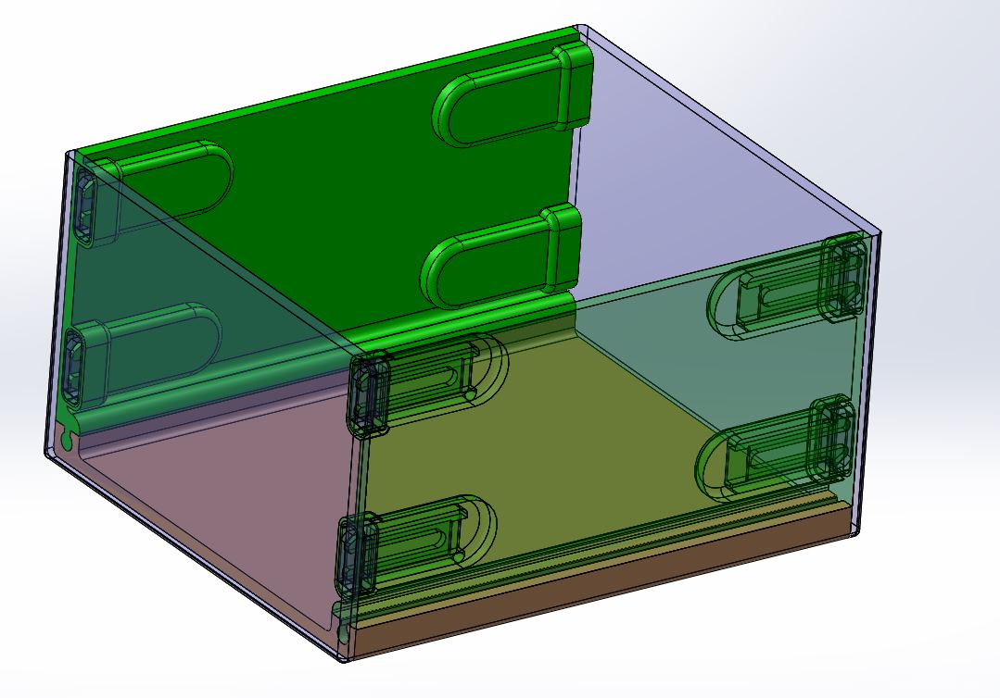
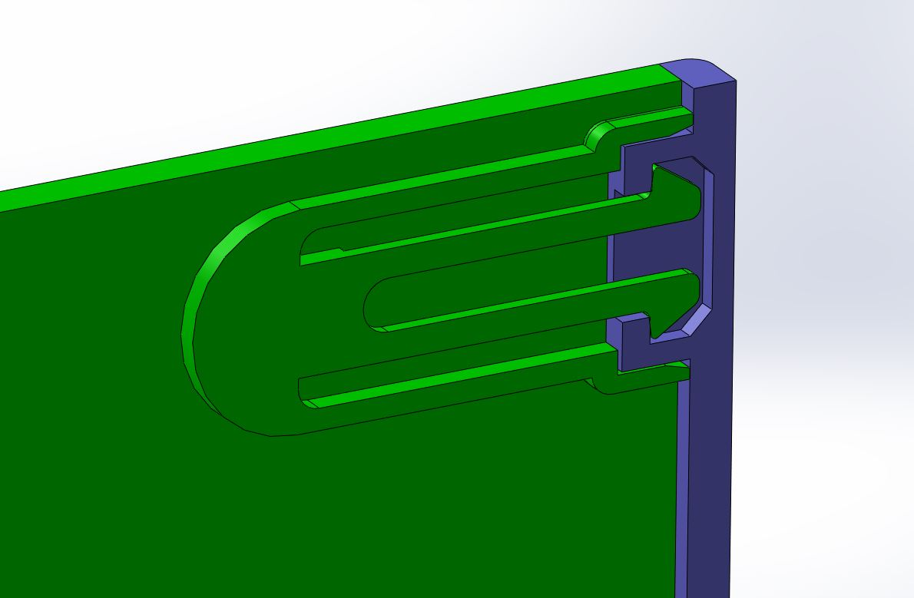
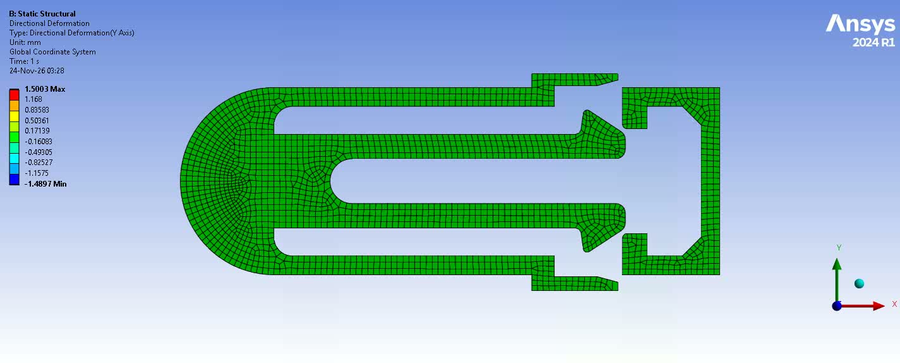
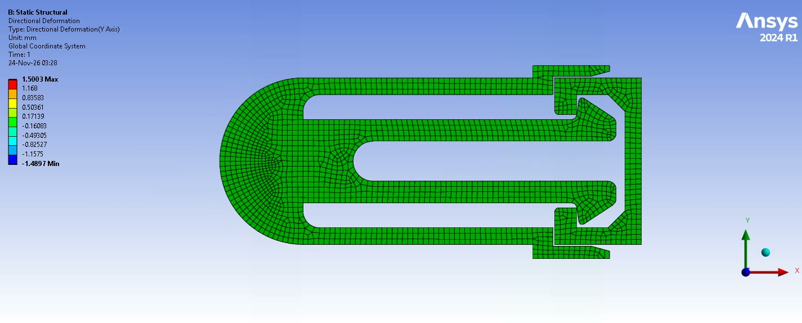
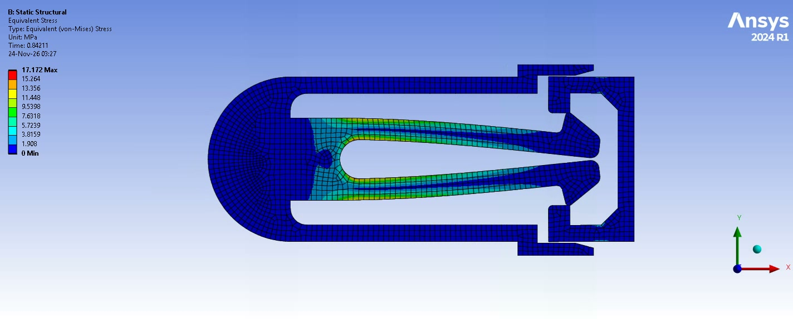
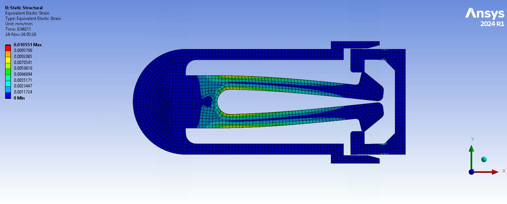
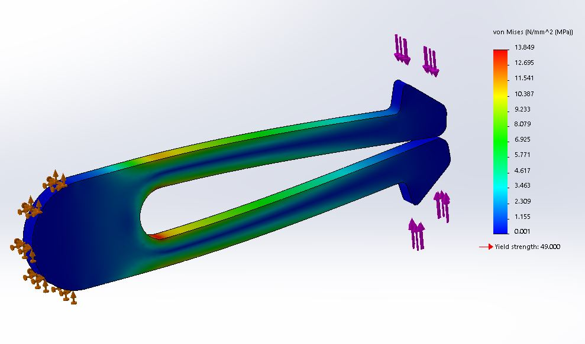

Purpose and analysis scope
Document the deformation and contact sequence as a flexible snap engages its mating head. This case records a displacement-controlled insertion, from initial clearance through arm bending to final engagement.
The supplied Workbench project is titled SnapFitStaticAnalysis — Static Structural (B5). Its solver deck uses a quasi-static transient formulation with large-deformation effects. The enclosure renderings provide application context; the solved model consists of two local bodies named snap and head.
| Document control | Value |
|---|---|
| Report | SF-012 / Revision 01 / 24 November 2026 |
| Original analysis | ANSYS 2024 R1; solver log dated 5 March 2025 |
| Evidence basis | Existing solver deck, solver log, monitor history, material data and supplied media |
| Status | Documented simulation; design acceptance remains open |
| Acceptance requirements | Insertion-force limit, retention-force target, required safety factor and allowable deformation were not supplied |
Geometry and idealization




The solver references Snap.scdoc. Both local bodies are deformable solids with the same ABS material assignment. No plastic constitutive model is defined in the input deck. Large geometry changes and frictional contact provide the modeled nonlinearities.
Dimensioned drawings, manufacturing tolerances, root radii and a documented simplification study were not supplied as report-ready evidence. The native geometry remains in the source case. The illustrated enclosure must not be interpreted as a full-assembly structural verification.
Material properties and units
| Property | Assigned value | Source |
|---|---|---|
| Material / both bodies | Plastic, ABS (high-impact) | ds.dat model summary |
| Young’s modulus | 1,628 MPa | MP,EX |
| Poisson’s ratio | 0.4089 | MP,NUXY |
| Density | 1,030 kg/m³ (1.03 × 10⁻⁹ tonne/mm³) | MP,DENS / MatML.xml |
| Tensile yield strength | 27.44 MPa at 23 °C | MatML.xml; comparison property only |
| Tensile ultimate strength | 36.26 MPa at 23 °C | MatML.xml |
| Reference temperature | 22 °C | tref in solver deck |
| Solver units | N, mm, s, tonne; stress in MPa | NMM /units,MPA |
The material library describes high-impact, injection-molding ABS. The deck uses linear elastic isotropic properties; the listed yield strength does not activate yielding. No manufacturing-specific anisotropy, creep, fatigue, plasticity or temperature-dependent loading is demonstrated. Printed-part behavior is therefore not established by this material assignment.
Mesh and discretization
| Item | Verified value |
|---|---|
| Nodes | 32,248 (actual solver count, not maximum node ID) |
| Solid elements | 5,712 SOLID186 elements: 4,668 and 1,044 in the two solid element types |
| Contact / target elements | 304 total: 152 CONTA174 and 152 TARGE170 |
| Total elements | 6,016 |
| Element shape checks | Disabled in solver deck; comment states prior checks in Workbench mesher |
| Mesh quality and independence | No quality histogram or mesh refinement study available |

A single successful mesh is documented. Stress, force and local deflection sensitivity to mesh density remain unverified. A refinement study should compare the same result quantities and locations over systematically refined meshes, especially at the arm roots and contact regions.
Supports, loading and contact
| Definition | Recovered setup |
|---|---|
| Fixed support | 471 nodes in _FIXEDSU; all nodal degrees of freedom fixed |
| Driven region | 557 nodes in _CM127UX_XP |
| Insertion motion | Global UX ramp to +4.5 mm at analysis time 1 s |
| Lateral constraints | UY = 0 and UZ = 0 on displacement-scoped nodes |
| Contact regions | Two “Frictional - head To snap” definitions |
| Friction coefficient | 0.1 |
| Formulation | Augmented Lagrange |
| Normal stiffness factor | 0.1; updated each equilibrium iteration |
| Penetration tolerance | 0.08 mm |
| Pinball radius | 0.15 mm |
| Initial contact | Solver reports all selected contact pairs initially open |
The scope identifiers and exact node lists are recorded in the original solver deck. Their physical face locations should be confirmed against the native model before rerunning or modifying this case. There is one forward insertion load step; no unloading, extraction or repeated cycling is defined.
Nonlinear solution controls
| Control | Setting |
|---|---|
| Analysis | ANTYPE,4 with TINTP,QUAS (quasi-static transient) |
| Large deformation | On: NLGEOM,ON |
| Time stepping | Automatic; initial 20, minimum 10, maximum 25 substeps |
| End time | 1 s; one load step |
| Linear solver request | PCG with 10⁻⁸ tolerance in input |
| Numerical damping | Enabled for quasi-static solution |
| Stabilization | Reduced energy method; dissipation ratio 0.0002; force limit 0.1 |
| Output | All converged substeps for displacement, reactions, stresses, strains and contact data |
| Weak springs | Off in analysis settings |
The artificial damping and stabilization support convergence through changing contact. Their effect has not been quantified here: an energy audit and sensitivity runs are required before treating the solution as a validated quasi-static response.
Complete insertion motion
- Approach: the snap and mating head begin with clearance.
- Contact and bending: the flexible arms deflect toward each other as the head advances.
- Passage: the tips pass the retaining shoulders.
- Engagement: the arms recover toward their original shape at the final inserted position.
This describes the visible sequence. Final geometric engagement does not establish pull-out resistance. The updated source is Directional Deformation.mp4, displaying Directional Deformation (Y Axis). The displayed scale extends from approximately −1.4897 to +1.5003 mm; these are animation legend limits, not independently extracted maxima at every frame. The animation includes interpolated display frames between solved substeps. Its deformation display scale is not documented.
Insertion snapshots




Stress and elastic-strain animations
The new face-on exports show how the arm-root stress and elastic strain develop during insertion and subside after engagement. Both clips retain all 20 source frames and use the same slowed 10-second playback as the deformation animation.
Equivalent von Mises stress
Equivalent elastic strain
Download elastic-strain animation
The saved Mechanical result tables inspected on 24 November 2026 report peak averaged equivalent stress of 17.172 MPa at 0.85 s and peak equivalent elastic strain of 0.010551 mm/mm (1.0551%) at 0.85 s. Averaging across bodies was disabled. These history peaks agree with the new video legend limits; the fixed limits are not per-frame extrema. No independent result-database extraction or mesh-convergence verification is claimed.




Results and convergence record
| Result / check | Observation | Interpretation |
|---|---|---|
| Solution completion | End time 1.0 reached; 14 converged substeps | The prescribed stroke was completed |
| Iteration history | 113 cumulative iterations; substep 11 required a second attempt | Convergence became more demanding near snap engagement |
| Final displacement monitor | 4.5000 mm | Includes prescribed translation; not a measure of arm bending alone |
| Solver messages | 13 warnings; 0 errors | Completion does not eliminate contact or modeling concerns |
| Insertion / retention forces | Not numerically extracted in this report | No force target or acceptance conclusion |
| Peak averaged equivalent stress | 17.172 MPa at 0.85 s | Read from saved Mechanical history; consistent with the video legend |
| Peak equivalent elastic strain | 0.010551 mm/mm at 0.85 s | Read from saved Mechanical history; 1.0551% |
| Yield-to-stress ratio | 27.44 / 17.172 = 1.60 | Screening ratio only; mesh, contact and material validation remain open |
| Substep | Analysis time (s) | Applied UX (mm) | Iterations | Max displacement monitor (mm) |
|---|---|---|---|---|
| 1 | 0.050 | 0.2250 | 2 | 0.225 |
| 2 | 0.100 | 0.4500 | 1 | 0.45 |
| 3 | 0.175 | 0.7875 | 8 | 0.80942 |
| 4 | 0.250 | 1.1250 | 6 | 1.1888 |
| 5 | 0.350 | 1.5750 | 6 | 1.6901 |
| 6 | 0.450 | 2.0250 | 6 | 2.1846 |
| 7 | 0.550 | 2.4750 | 8 | 2.6829 |
| 8 | 0.650 | 2.9250 | 6 | 3.1352 |
| 9 | 0.750 | 3.3750 | 4 | 3.5861 |
| 10 | 0.850 | 3.8250 | 2 | 4.0368 |
| 11 | 0.890 | 4.0050 | 23 | 4.2191 |
| 12 | 0.930 | 4.1850 | 9 | 4.3405 |
| 13 | 0.965 | 4.3425 | 13 | 4.4093 |
| 14 | 1.000 | 4.5000 | 5 | 4.5 |
Applied UX in this table is calculated as 4.5 × analysis time for the ramped load. The displacement-monitor column is transcribed from file.mntr; it is not a separately postprocessed maximum resultant deformation. Download the monitor history (CSV).
Separate stress rendering


This image shows a different geometry and a 49 MPa yield annotation, whereas the ANSYS material record lists 27.44 MPa. Its solver, loading, mesh and relationship to this run are not verified. It is retained as a reference image only; neither its stress nor its yield annotation is used to assess the ANSYS model. The filename “at Max Deflection” is source metadata, not an independently verified worst-case result.
Verification, warnings and acceptance
| Requirement | Evidence / remaining work |
|---|---|
| Solver convergence | Run complete; inspect the original iteration and contact logs |
| Contact behavior | Warnings include abrupt contact status changes and possible spurious contact; inspect penetration, pressure and active regions |
| Force convergence | Early warning about a very small reference force; review convergence tolerances |
| Element quality | No exported quality report; solver-side shape checking disabled |
| Mesh convergence | Not demonstrated; repeat with refined arm-root and contact meshes |
| Energy and balance | Check kinetic, strain and stabilization energies, and support / driving reaction balance |
| Material validity | Confirm ABS grade, manufacturing route and applicable strain / temperature range |
| Design acceptance | Supply force targets, allowable strain / stress and safety-factor criteria |
| Validation | No physical test or independent analytical correlation supplied |
| Durability and retention | Require separate extraction, unloading, creep and cycle cases as applicable |
Conclusion: the recorded model completes the 4.5 mm insertion and the animation shows bending followed by engagement. The available evidence supports a documented kinematic/contact demonstration. It does not yet establish an allowable insertion force, retention capacity, structural safety factor or service life.